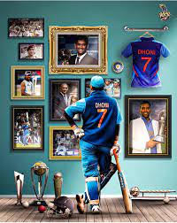
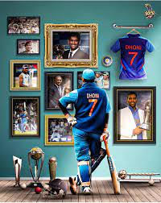

Mahendra Singh Dhoni is one of the most well-known cricketers in the world.Successful cricketers in Indian history.
He holds several records, including most runs scored in International Cricket Council (ICC) tournaments,and the fastest half-century in ODIs.
He is also the first captain in history to win every game. Three ICC trophies, namely the World Cup (2), Champions Trophy and the World Twenty20.
He was awarded Padma Shri, India’s fourth-highest civilian award, in 2009.MS Dhoni was born on June 7, 1981, in Ranchi, Jharkhand. His father, Narendra Singh and mother, Rajani, were the ones who gave him the name Mahendra Singh Dhoni.
| WINNING TROPHYS | yEAR |
|---|---|
| ODI WORLD CUP | 2011 |
| ICC CHAMPIONS TROPHY | 2014 |
| T20 WORLD CUP | 2008 |
| IPL TROPHYS | 5 |
MS Dhoni is an Indian cricketer who plays for the Chennai franchise in the Indian Premier League. MS Dhoni was born on Jul 07, 1981; and as of 2023, he is 42 years old. MS Dhoni is a wicket keeper from Ranchi and bats right handed. He made his IPL debut in 2008. MS Dhoni has played 250 matches to date in his IPL career and has scored 5082 runs, with an average of 39.09. He has also slammed 24 half-centuries, with his highest IPL score being 84* runs. MS Dhoni has hit 349 fours and 239 sixes in his IPL career. In the IPL Auction 2023, the Chennai franchise acquired the services of MS Dhoni for Rs 12.00 Cr. On May 2023, he played his last IPL match against Gujarat at the Narendra Modi Stadium, Ahmedabad, India, scoring 0 runs off 1 balls.